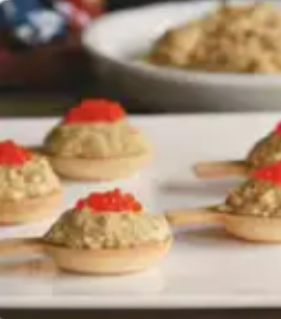
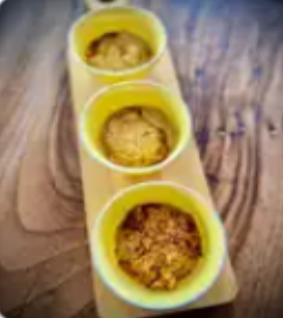
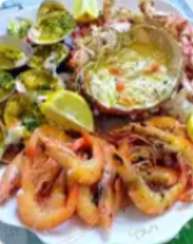
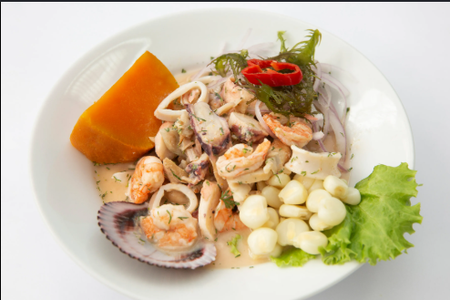
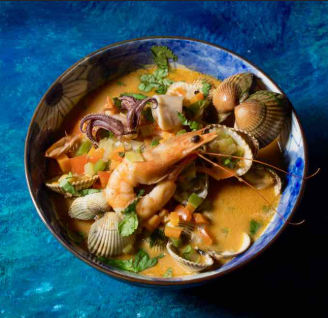
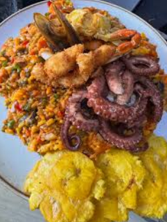
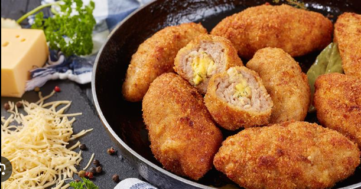
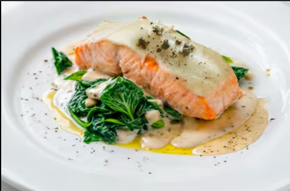
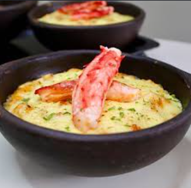

Falsa mousse centollo en cucharitas
huevos cocidos • palitos de cangrejo • mejillones al natural escurridos • berberechos al natural escurridos • mayonesa • nata para cocinar • sal • cucharitas comestibles

huevos cocidos • palitos de cangrejo • mejillones al natural escurridos • berberechos al natural escurridos • mayonesa • nata para cocinar • sal • cucharitas comestibles

Centollas cocidas • Cebollas medianas • Leche entera con calcio • Maicena • Sal • Pimienta negra • Nuez moscada • Aceite de oliva virgen extra • Pan rallado tostado

carne de centolla cocida • cebolla morada cortada en cuadritos • pimiento morrón cortado en cuadritos • apio cortado en cuadritos • cilantro picado • mayonesa • mostaza a la piedra

ingredientes para el relleno • carne de centolla cocida • camarones descascarados, desvenados, cortados en trocitos • mantequilla sin sal • cebolla cortada en cuadritos

centolla viva de 1 kilo y medio aproximadamente • conchas finas vivas • gambas frescas grandes • limones y medio medianos • ajos muy gruesos • perejil fresco no muy fino

Centollas (hervidas) • Spaghetti • Cebollas (en daditos) • ajo (en daditos) • Concentrado de tomate • Brandy • Estragón • ~10 Tomates cherry (partidos por la mitad) • Aceite de oliva

pescado blanco en cubos • camarones • pulpo cocido • jugo de limón fresco • cebolla morada en julianas • cilantro picado • ají limo • camote cocido • maíz choclo

mixtura de mariscos • leche de coco • pimentón verde y rojo • cebolla • ajo • pasta de tomate • vino blanco • cilantro • crema de leche para espesar

arroz grano largo • calamares • camarones • mejillones • arvejas • zanahoria en cubos • pimentón dulce • fondo de pescado • aceite con achiote para dar color

pulpa de cangrejo • carne de centolla desmenuzada • salsa bechamel espesa • cebollino picado • huevo • pan rallado panko • aceite para freír

filete de salmón fresco con piel • alcaparras en salmuera • mantequilla • vino blanco • zumo de limón • pimienta blanca • puré de papas como guarnición

carne de centolla • pan de molde remojado en leche • cebolla picada • ají color • queso mantecoso rallado • crema de leche • vino blanco • queso parmesano para gratinar